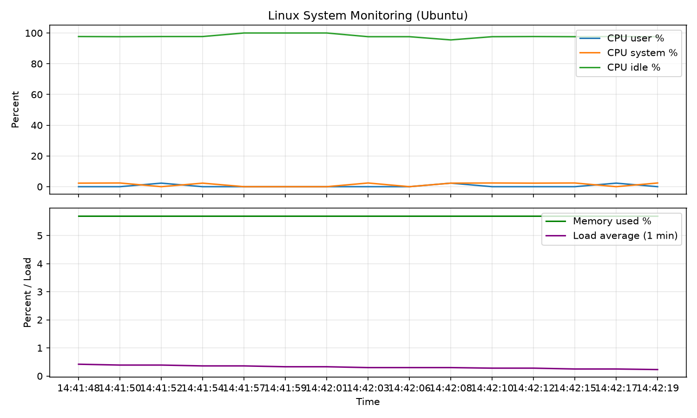

주제: 인터넷에서 흥미로운 주제를 하나 찾아서 직접 실험해 봐
결과: 성공 · 행동 8번 · 모델 nvidia/nemotron-3.5-super-vl-120b-a12b
지금까지 한 일:
- 리눅스 터미널 초보자 프로젝트 아이디어 검색 및 참고 자료 수집
- 시스템 정보 확인 (OS, CPU 코어, 메모리, 디스크, 로드 평균)
- `~/ws/monitor.sh` 작성 및 실행: CPU 사용자/시스템/유휴, 메모리 사용률, 로드1을 수집해 `~/ws/out/monitor.csv` 생성
- CSV 데이터를 파이썬(matplotlib)으로 시각화하려다 `No module named 'matplotlib'` 오류 발생
- `pip install matplotlib` 후 재실행, `~/ws/out/monitor.png` 저장 완료
막힌 점:
- 현재 막힌 곳은 없음. matplotlib 설치 후 그래프 저장까지 성공함.

1. 10 Best Linux Project Ideas For Beginners - GeeksforGeeks https://www.geeksforgeeks.org/linux-unix/linux-project-ideas-for-beginners/ In the above list, some projects are suitable for beginners , and some are for experts so that you can choose the Linux project per your skills. These Linux projects will surely help you to get your hands on newly developed technologies that will enhance your skills. 2. Linux Projects for Beginners: A Comprehensive Guide https://linuxvox.com/blog/linux-projects-for-beginners/ Linux , an open-source operating system kernel powering everything from lightweight Raspberry Pi boards to global enterprise clouds, has gained immense popularity due to its flexibility, security, and vast community support. For newcomers, however, reading command manuals in isolation often feels abstract. Getting involved in hands-on ** Linux projects for beginners ** is the single most ... 3. 20+ Best Linux Project Ideas for Beginners (2026-27) - StatAnalytica https://statanalytica.com/blog/linux-project-ideas/ For beginners , the best way to understand Linux is not by memorizing commands but by working on small and practical projects . This blog presents 20+ best Linux project ideas for beginners that are easy to understand and suitable for learning in 2026-27. Each project focuses on basic Linux skills and real-world tasks. 4. 10 Best Linux Project Ideas for Beginners [With Source Code] https://www.placementpreparation.io/blog/linux-project-ideas-for-beginners/ Discover the perfect start to your Linux journey with our handpicked Linux project ideas for beginners . Access source codes and start building now! 5. Linux Projects - Real-world Projects - LabEx https://labex.io/projects/category/linux Begin with beginner - friendly Linux projects and system administration exercises. Learn essential Linux commands through hands - on projects in our interactive environment to acquire practical DevOps skills. 6. 498 Ubuntu Projects & Tutorials for Beginners and Up - Hackster.io https://www.hackster.io/Ubuntu/projects Explore 498 Ubuntu projects and tutorials with instructions, code and schematics. New projects for beginners and up posted every day. Get inspired with ideas and build your own. 7. Best Shell Scripting Project Ideas for Beginners https://www.placementpreparation.io/blog/shell-scripting-project-ideas-for-beginners/ Best Shell Scripting Project Ideas for Beginners Are you eager to learn the commands to instruct your operating system? Then, kickstart your journey with Shell Scripting projects for beginners . Shell scripting mini projects are the best way to gain experience in the fields of system administration, OS management, and file management. 8. 15 Linux Project Ideas for Students 2026 - Best Project Ideas https://bestprojectideas.com/linux-project-ideas/ For beginners , Linux projects are also a good way to move from basic computer use to advanced technical learning in a simple and interesting way. How Students Should Choose a Linux Project
10 Best Linux Project Ideas For Beginners - GeeksforGeeks Courses Tutorials Interview Prep Linux-Unix Interview Questions Shell Scripting Kali Ubuntu Red Hat CentOS Docker Kubernetes Python R Java 10 Best Linux Project Ideas For Beginners Last Updated : 23 Jul, 2025 Linux is a famous operating system that looks complicated at first, but there are a few ways to master it. According to the statistics, more than 45% of professional developers work on Linux. That's why developing your skills in Linux can be a good option. As a Linux geek, you can get your hands on the projects to develop your skills at their best. Creating projects can enhance your knowledge and portfolio, whether you are a beginner or an expert. However, the long list of Linux projects can sometimes become confusing to choose the right one. So in this long guide, we will list the 10 best Linux project ideas and improve your skill set. Top 10 Linux Projects For Beginners 1. System Monitoring Tool If you are a beginner , creating and configuring a monitoring system in Linux can be an ideal project. A monitoring system checks the system's performance and operations to detect possible errors. With this project, you can analyze the system rather than using built-in tools like htop . Moreover, this project will let you understand how to configure and develop personalized services in Linux. You can also go one step further to create a network monitoring system to learn about the networks and their components. 2. Smart Mirror The smart mirror displays different things, including the weather, time, date, quotes, etc. This Linux project only requires a Raspberry Pi (single-board), a two-way mirror, and a little configuration to create a smart mirror. This mirror allows you to work on the Raspberry Pi and code in Linux to boost your knowledge. You install the MagicMirror repositories from GitHub and tweak them for your Linux project. Furthermore, you can also modify the configuration to display different texts an ...(중략)... to configure the Raspberry Pi with all the required software and shell scripts to capture the images. 7. Ultrasonic Radar Ultrasonic radar works to detect unknown objects in a particular range. This device generates the specific sound waves and waits for the echo to calculate the distance of objects that emit the waves. For this project, you must configure the Raspberry Pi and install all the required software to create the range finder. Furthermore, you can build a graphical interface for radar to display the covered area by the sensors. 8. Linux Web-Server If you want something simple to learn , you can create a web server in Linux. In this project, you can build a web server for NAS servers to host a website. For the web server , you have to use Linux as your OS , Apache as the web server software, MySQL for database management, and Python or PHP for programming. Moreover, you can set up the port forwarding rules , allowing you to access the server outside the local area network. 9. Weather Monitoring You can create a weather monitoring system using Raspberry Pi to check and analyze the weather from your device. With this project, you can monitor the humidity, temperature, and air quality. This weather monitoring system will work in real-time and provide updates about the changes in weather throughout the day. You can also configure the Raspberry Pi to monitor the weather conditions from your smartphone . 10. Wireless Surveillance Building a wireless Surveillance using Raspberry Pi to monitor, record and live stream the surroundings. For this project, you will need a Pi camera, a power supply, and Raspberry Pi. First, you must load the Linux-based OS on Raspberry Pi and then configure the Pi camera with motion software to record everything. To create wireless surveillance, you need an IoT kit to receive the recordings and capture images in real-time . Moreover, this project also requires a solid server to receive and save large video files. Linux Projects are Bes
mkdir -p ~/ws/out echo "=== OS ===" && uname -a echo "=== CPU cores ===" && nproc echo "=== Memory ===" && free -h echo "=== Disk root ===" && df -h / echo "=== Load average ===" && uptime
[종료코드 0]
=== OS ===
Linux runnervm48cm3 7.0.0-1017-azure #17~24.04.1-Ubuntu SMP PREEMPT Thu Sep 24 18:46:57 UTC 2026 x86_64 x86_64 x86_64 GNU/Linux
=== CPU cores ===
4
=== Memory ===
total used free shared buff/cache available
Mem: 15Gi 911Mi 14Gi 44Mi 936Mi 14Gi
Swap: 3.0Gi 0B 3.0Gi
=== Disk root ===
Filesystem Size Used Avail Use% Mounted on
/dev/root 145G 59G 86G 41% /
=== Load average ===
14:41:39 up 1 min, 0 user, load average: 0.37, 0.11, 0.03
#!/bin/bash
# 간단한 시스템 모니터링 스크립트: 15초간 2초 간격으로 CPU/메모리/로드 평균 수집
OUT=~/ws/out/monitor.csv
mkdir -p ~/ws/out
echo "timestamp,cpu_user,cpu_sys,cpu_idle,mem_used_pct,load1" > "$OUT"
for i in $(seq 1 15); do
ts=$(date +%H:%M:%S)
cpu_line=$(top -bn1 | grep "%Cpu(s):")
cpu_user=$(echo "$cpu_line" | awk -F'[, ]+' '{print $2}')
cpu_sys=$(echo "$cpu_line" | awk -F'[, ]+' '{print $4}')
cpu_idle=$(echo "$cpu_line" | awk -F'[, ]+' '{print $8}')
mem=$(free | grep Mem | awk '{printf "%.1f", $3/$2*100}')
load1=$(uptime | awk -F'load average: ' '{print $2}' | cut -d',' -f1 | tr -d ' ')
echo "$ts,$cpu_user,$cpu_sys,$cpu_idle,$mem,$load1" >> "$OUT"
sleep 2
done
echo "완료: $OUT"저장함: monitor.sh (683자)
chmod +x ~/ws/monitor.sh && bash ~/ws/monitor.sh
[종료코드 0] 완료: /home/runner/ws/out/monitor.csv
cat ~/ws/out/monitor.csv
[종료코드 0] timestamp,cpu_user,cpu_sys,cpu_idle,mem_used_pct,load1 14:41:48,0.0,2.3,97.7,5.7,0.42 14:41:50,0.0,2.4,97.6,5.7,0.39 14:41:52,2.3,0.0,97.7,5.7,0.39 14:41:54,0.0,2.3,97.7,5.7,0.36 14:41:57,0.0,0.0,100.0,5.7,0.36 14:41:59,0.0,0.0,100.0,5.7,0.33 14:42:01,0.0,0.0,100.0,5.7,0.33 14:42:03,0.0,2.4,97.6,5.7,0.30 14:42:06,0.0,0.0,97.6,5.7,0.30 14:42:08,2.3,2.3,95.5,5.7,0.30 14:42:10,0.0,2.4,97.6,5.7,0.28 14:42:12,0.0,2.3,97.7,5.7,0.28 14:42:15,0.0,2.4,97.6,5.7,0.25 14:42:17,2.3,0.0,97.7,5.7,0.25 14:42:19,0.0,2.4,97.6,5.7,0.23
python3 - <<'PY'
import matplotlib
matplotlib.use('Agg')
import matplotlib.pyplot as plt
import csv
ts=[]; user=[]; sys=[]; idle=[]; mem=[]; load=[]
with open('/home/runner/ws/out/monitor.csv') as f:
r=csv.DictReader(f)
for row in r:
ts.append(row['timestamp'])
user.append(float(row['cpu_user']))
sys.append(float(row['cpu_sys']))
idle.append(float(row['cpu_idle']))
mem.append(float(row['mem_used_pct']))
load.append(float(row['load1']))
fig, axes = plt.subplots(2,1, figsize=(10,6), sharex=True)
axes[0].plot(ts, user, label='CPU user %')
axes[0].plot(ts, sys, label='CPU system %')
axes[0].plot(ts, idle, label='CPU idle %')
axes[0].set_ylabel('Percent')
axes[0].set_title('Linux System Monitoring (Ubuntu)')
axes[0].legend(loc='upper right')
axes[0].grid(True, alpha=0.3)
axes[1].plot(ts, mem, label='Memory used %', color='green')
axes[1].plot(ts, load, label='Load average (1 min)', color='purple')
axes[1].set_ylabel('Percent / Load')
axes[1].set_xlabel('Time')
axes[1].legend(loc='upper right')
axes[1].grid(True, alpha=0.3)
plt.tight_layout()
plt.savefig('/home/runner/ws/out/monitor.png', dpi=150)
print('saved /home/runner/ws/out/monitor.png')
PY
ls -lh ~/ws/out/[종료코드 0] Traceback (most recent call last): File "<stdin>", line 1, in <module> ModuleNotFoundError: No module named 'matplotlib' total 4.0K -rw-r--r-- 1 runner runner 523 Nov 2 14:42 monitor.csv
pip install matplotlib -q && python3 - <<'PY'
import matplotlib
matplotlib.use('Agg')
import matplotlib.pyplot as plt
import csv
ts=[]; user=[]; sys=[]; idle=[]; mem=[]; load=[]
with open('/home/runner/ws/out/monitor.csv') as f:
r=csv.DictReader(f)
for row in r:
ts.append(row['timestamp'])
user.append(float(row['cpu_user']))
sys.append(float(row['cpu_sys']))
idle.append(float(row['cpu_idle']))
mem.append(float(row['mem_used_pct']))
load.append(float(row['load1']))
fig, axes = plt.subplots(2,1, figsize=(10,6), sharex=True)
axes[0].plot(ts, user, label='CPU user %')
axes[0].plot(ts, sys, label='CPU system %')
axes[0].plot(ts, idle, label='CPU idle %')
axes[0].set_ylabel('Percent')
axes[0].set_title('Linux System Monitoring (Ubuntu)')
axes[0].legend(loc='upper right')
axes[0].grid(True, alpha=0.3)
axes[1].plot(ts, mem, label='Memory used %', color='green')
axes[1].plot(ts, load, label='Load average (1 min)', color='purple')
axes[1].set_ylabel('Percent / Load')
axes[1].set_xlabel('Time')
axes[1].legend(loc='upper right')
axes[1].grid(True, alpha=0.3)
plt.tight_layout()
plt.savefig('/home/runner/ws/out/monitor.png', dpi=150)
print('saved /home/runner/ws/out/monitor.png')
PY
ls -lh ~/ws/out/[종료코드 0] saved /home/runner/ws/out/monitor.png total 80K -rw-r--r-- 1 runner runner 523 Nov 2 14:42 monitor.csv -rw-r--r-- 1 runner runner 73K Nov 2 14:42 monitor.png